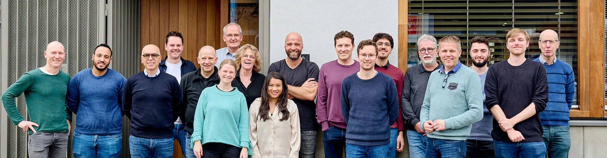

Van een muurdoorbraak in een woning tot de volledige draagconstructie van een appartementencomplex. Vanuit Amsterdam rekenen wij aan constructies die blijven staan.
Van monumentrestauratie tot volledige nieuwbouw
Restauraties van monumentale panden, verbouwingen van woningen en kantoren, kleinschalige ingrepen en volledige nieuwbouw: voor al die projecten maken wij de berekeningen en tekeningen van de draagconstructie.
Een belangrijk deel van onze expertise ligt bij funderingsonderzoek en funderingsherstel, met name bij oudere Amsterdamse panden. We kennen de stad, haar bodem en haar gebouwen, en de problemen die daarbij horen.
Onze opdrachtgevers zijn particulieren, VvE’s, architecten, aannemers, projectontwikkelaars en woningbouwverenigingen. Wat hen verbindt, is de behoefte aan een constructieve partner die meedenkt en overzicht houdt.
Referenties
Wat opdrachtgevers zeggen

Niemand wist precies wat er onder dit pand zat. Duyts heeft het uitgezocht en daarna in gewone taal uitgelegd wat er kon en wat dat betekende voor het ontwerp.
Chassékerk, Amsterdam

Een monument, een krappe bouwplaats en een opdrachtgever die door wilde. De berekeningen klopten en lagen er wanneer we ze nodig hadden; dat scheelt in de uitvoering enorm.
Artis, Amsterdam

Wij wilden de hele begane grond openbreken. We hebben eerlijk gehoord welke muur wel kon en welke niet, en ze hebben meegedacht over een oplossing die uitvoerbaar bleef.
Stadsvilla, Amsterdam
1 / 3
Werkzaamheden
Waar wij aan rekenen
Drie hoofdrichtingen, met daaronder de ingrepen waarvoor opdrachtgevers ons het meest vragen.
Ook los aan te vragen
Een losse berekening, een schaderapport of een second opinion op het advies van een andere partij.
Artis
Wij werken al 20 jaar samen met Artis en zijn zeer betrokken bij grote en kleine projecten
Bibliotheek Woerden
Door DUYTS zijn voor de renovatie van de bibliotheek in Woerden de constructiveadviezen uitgewerkt

Boerderij Amstel
DUYTS heeft voor een boerderij aan de Amstel in Amsterdam de constructieadviezen voor de verbouwing en een nieuwbouw met de kelder uitgewerkt

Over ons
Klein genoeg om persoonlijk te blijven
Vanuit ons kantoor aan de Van Slingelandtstraat in Amsterdam werken circa 25 tekenaars, constructeurs en specialisten aan projecten door het hele land. Groot genoeg voor complexe vraagstukken, klein genoeg om persoonlijk te blijven.
U schakelt direct met de mensen die aan uw project rekenen. Geen lagen, geen omwegen. Meer dan driekwart van onze medewerkers werkt hier tien jaar of langer, dus de ervaring blijft in huis.
